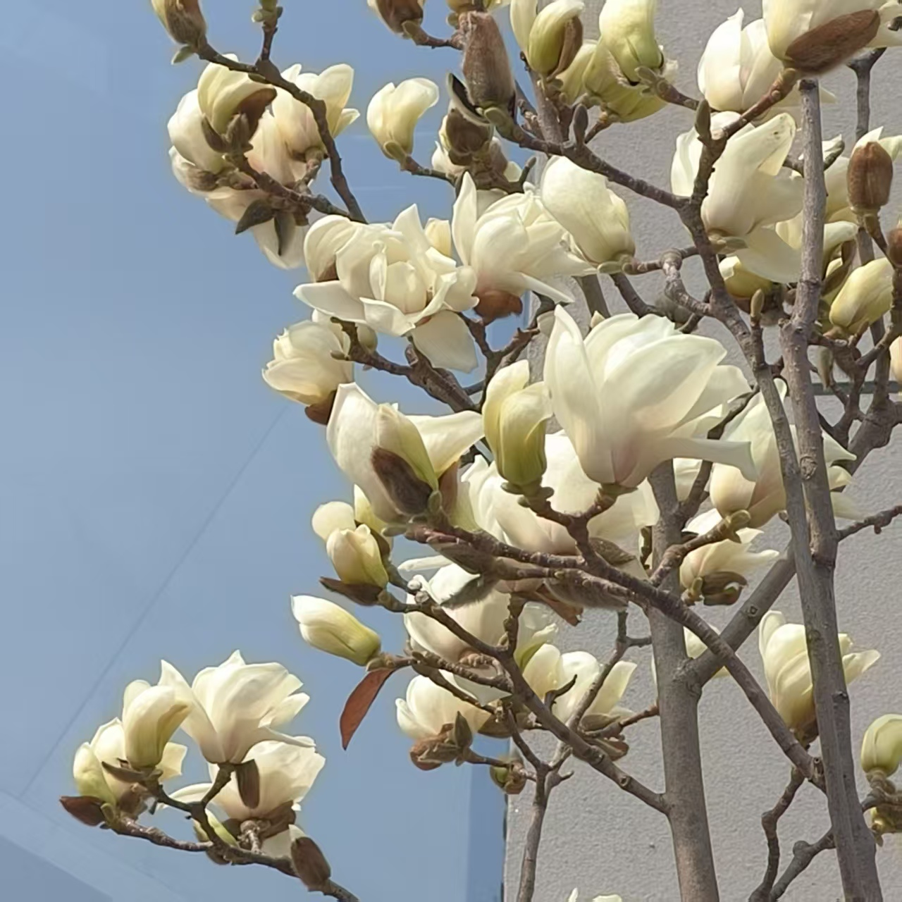
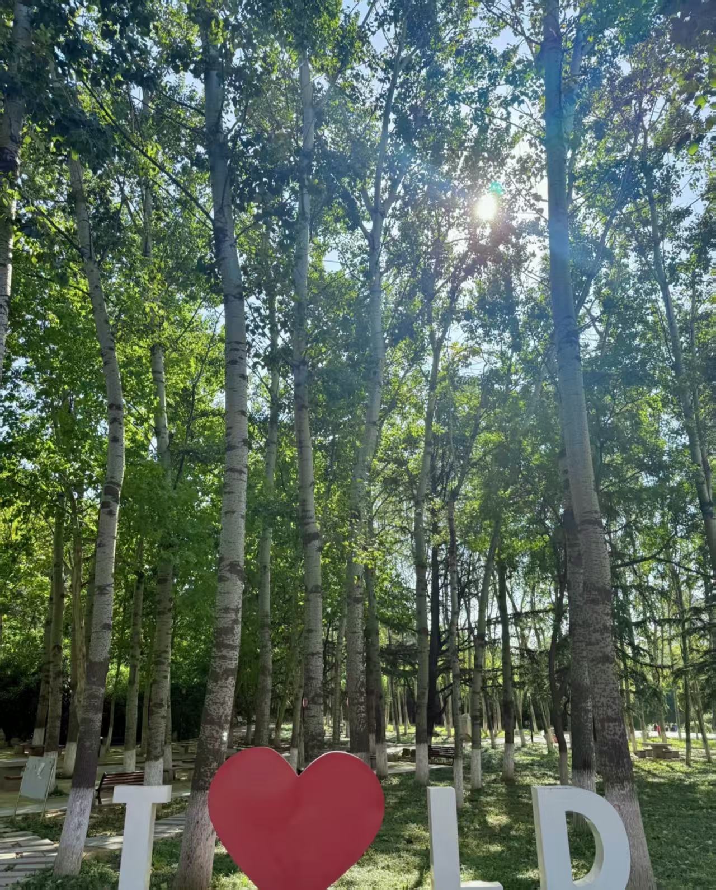
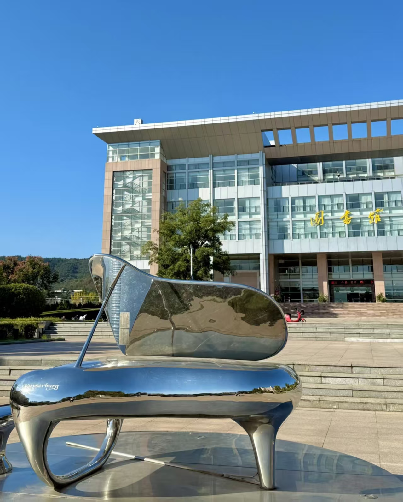
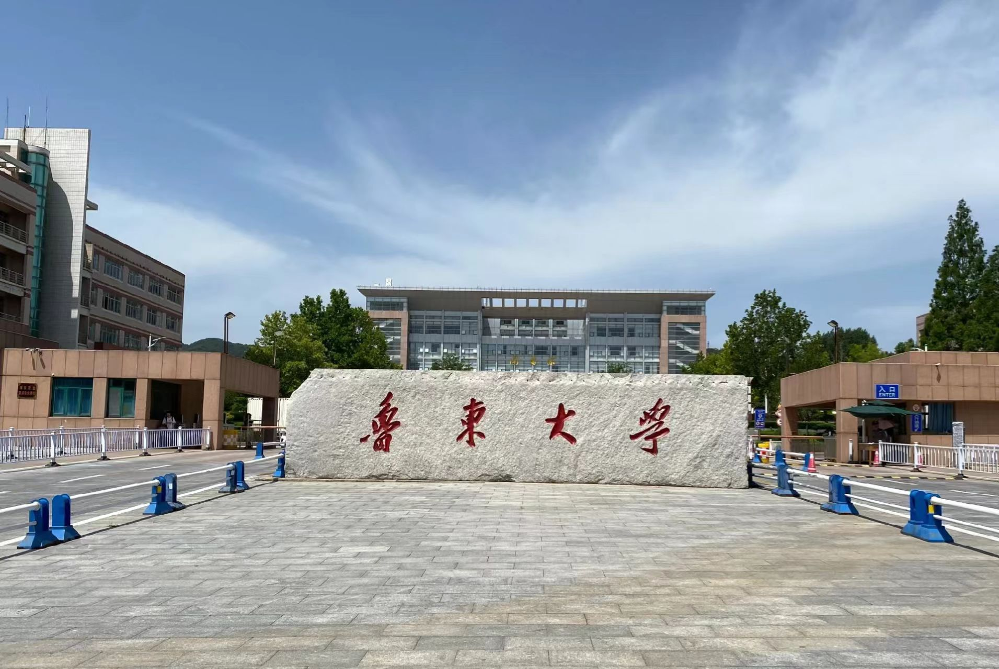

当春风拂过校园的每一寸土地，沉睡了一整个寒冬的生机便彻底苏醒了。沿着主路漫步，道路两旁的玉兰花树早已缀满了粉白的花苞，像是被春日晕染的云霞，在阳光下泛着温柔的光晕。微风轻拂，花瓣簌簌落下，铺成一条浪漫的花径，踩上去软软的，连空气里都弥漫着清甜的香气。乳子湖边，垂柳抽出了嫩黄的新芽，细长的枝条自然垂到湖面，随风轻柔地摇摆。湖面上，几只野鸭悠闲地游弋，偶尔低头啄食水中的浮萍，动静之间，勾勒出一幅灵动的春日画卷。
校园的草坪也褪去了枯黄，换上了鲜嫩的翠绿，像是一块柔软的绿毯铺在天地间。课间时分，同学们三三两两地坐在草坪上，或是背书，或是闲聊，或是晒着太阳发呆，青春的笑声与春日的鸟鸣交织在一起，成了校园里最动听的旋律。图书馆旁的玉兰树也悄然绽放，洁白的花朵缀满枝头，像是一只只振翅欲飞的白鸽，在蓝天的映衬下格外圣洁。每一处景致都藏着春日的温柔，每一缕风都带着校园的生机，这便是独属于我们的、最美的春日校园。




© 2026 美丽校园系列实验作业